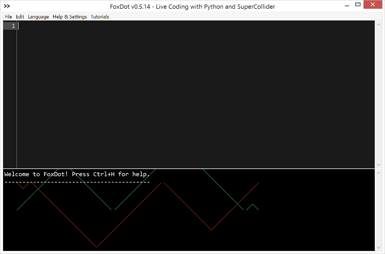
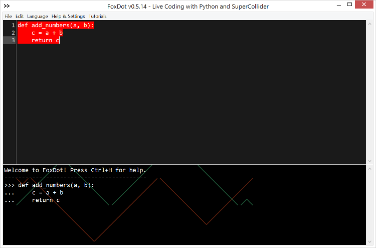

Felicidades por haber instalado FoxDot - ¡hagamos algunos sonidos! Primero necesitas abrir SuperCollider para que podamos cargar los sonidos de FoxDot. Una vez que se abra SuperCollider, escriba lo siguiente en el editor:
FoxDot.start
Siga las instrucciones de instalación para sus descargas de Python y SuperCollider. Para ejecutar esta línea de código es necesario colocar el cursor de texto en la línea y presionar Ctrl+Return. La línea debería parpadear y debería ver que algunos números se vuelven verdes en la parte inferior de su pantalla:

Ahora podemos abrir el editor FoxDot y empezar a hacer sonidos. Puede abrir el editor yendo a su aplicación de línea de comandos (Símbolo del sistema en Windows, Terminal en Mac y Linux), escribiendo el siguiente código y presionando enter:
python -m FoxDot
Esto le indica a su computadora que ejecute el intérprete de Python y el módulo FoxDot como un script independiente. Usted debe ser recibido con una ventana que se ve algo como esto:
Lo que tienes aquí es un editor de texto interactivo; puedes escribir código pero también ejecutar el código dentro del propio editor. Para ejecutar un bloque de código (líneas no separadas por líneas en blanco) asegúrese de que su cursor de texto está en el bloque de código que desea evaluar y presione Ctrl+Enter en Windows/Linux o Comando+Return en Mac. El texto debería parpadear en rojo por un momento y ser impreso en la consola en la parte inferior de la pantalla:

Hagamos un simple bucle de punteo. Escriba lo siguiente en el editor de FoxDot y evalúelo:
p1 >> pluck()
Esto debería iniciar un bucle muy básico reproduciendo una nota punteada al repetir. Para detener esto, agregue .stop() al final de la línea para que se vea así:
p1 >> pluck().stop()
Evalúe la línea para detener el bucle. ¡Ahí lo tienes! Has hecho sonido con FoxDot - echa un vistazo al resto de la sección "Getting Started" para familiarizarte con otros aspectos del entorno antes de pasar a las secciones avanzadas... ¡y diviértete!